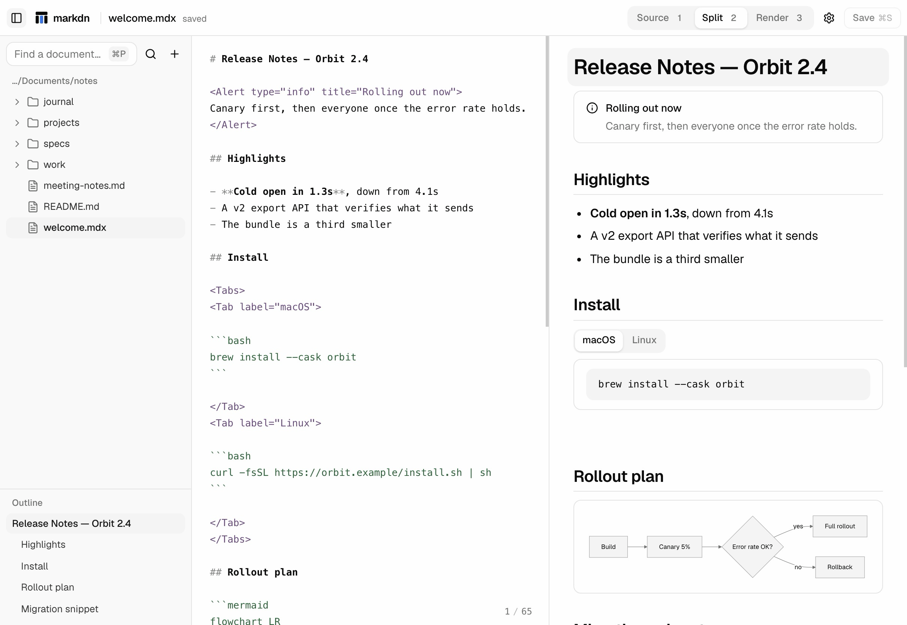
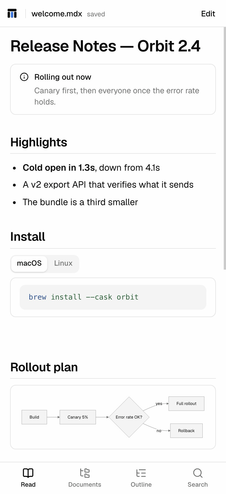
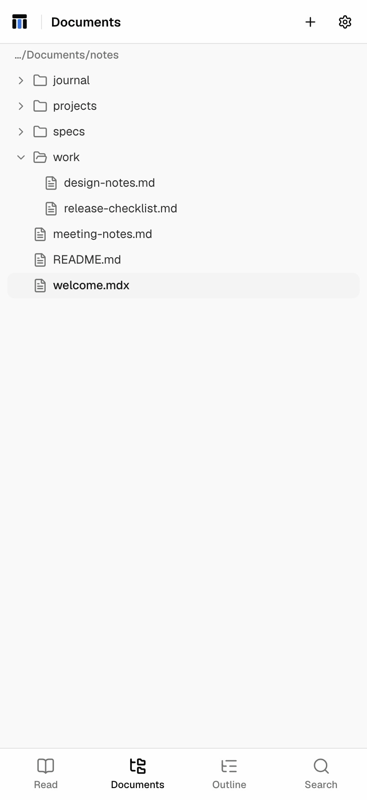
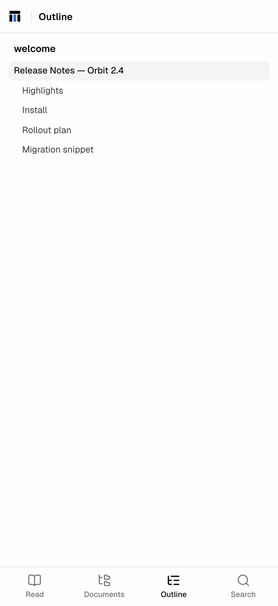
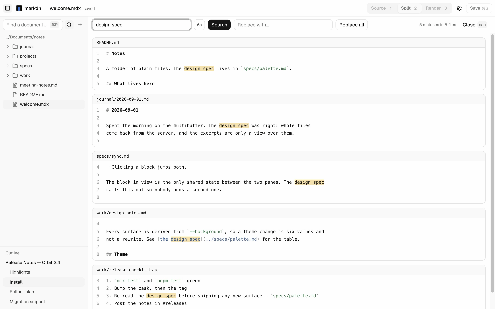
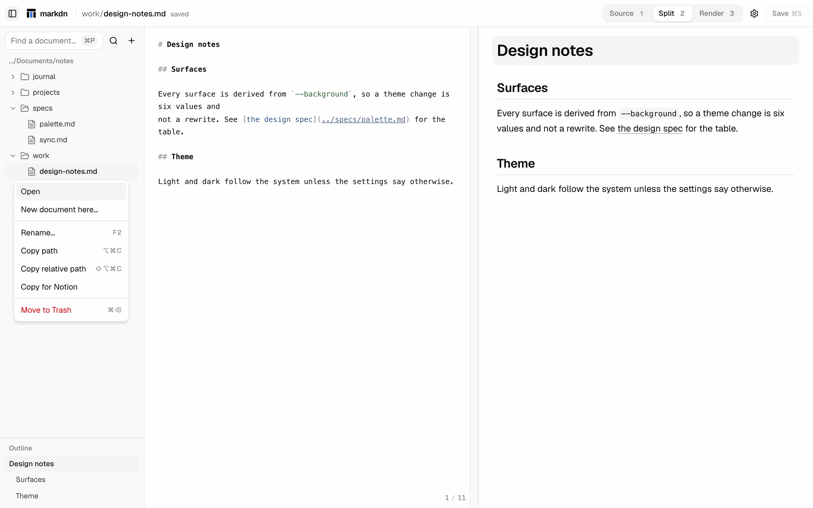
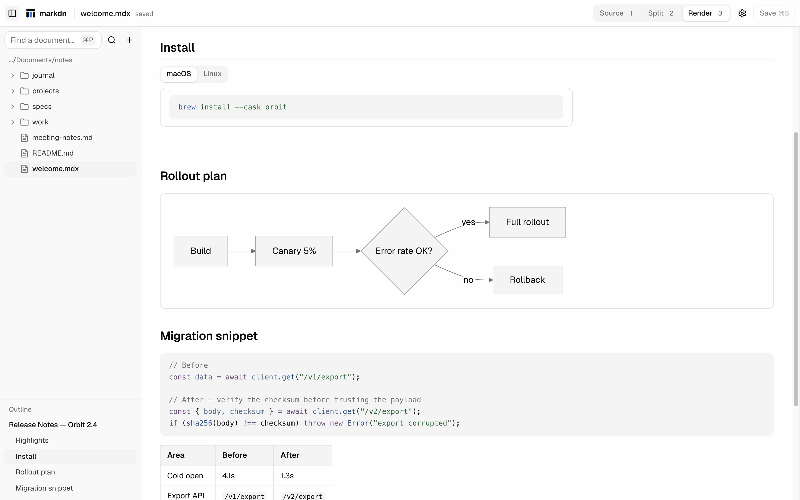

Every part of the document, rendered.
A Markdown and MDX editor for macOS and Linux, and in preview on iPad and iPhone: diagrams, components and highlighted code, live beside the source you are typing. A native window over a folder of plain files that stay plain files.
curl -fsSL https://raw.githubusercontent.com/filipecabaco/markdn/main/install.sh | sh


Read on the couch. Fix it on the train.
On an iPad the folder sits beside the document, and its outline takes you to any heading with a tap. On an iPhone it opens to the rendered document, with the folder, the outline and search a thumb away.
A preview: it runs in the iOS simulator today, built with ex_tauri. It is not on the App Store.


Two panes, one document.
Scroll either side. The other follows by block, not by percentage, so a three-line mermaid fence and the 200px diagram it draws stay level. The rail between them marks where you are in both at once.
Try it: scroll either pane, or switch views.
Type roughly what you remember.
One palette over every document under your folder and every command in the
app. dsn finds work/design-notes.md three folders
down. Open it with nothing typed and it shows what you touched last.
Things to type
Matching is by subsequence: a run of letters beats scattered ones, and a hit in the file name beats one in the folders above it.
Fix it in twelve files without opening twelve files.
⌘⇧F searches every document under your folder and stacks the hits in one buffer, each with the lines around it. The excerpts are editable source: type into a result and you are typing into the file, or replace across all of them at once. One ⌘S writes the lot, and the lines an excerpt never showed you come back untouched.

Name it, rename it, trash it.
⌘N names a new document beside the one you are reading and makes any folders the name needs. A name that is already taken is refused, never overwritten. Started typing before you named it? ⌘S asks for a name and saves what you wrote.
Right-click a file to rename it, copy its path, or move it to the Trash, where it can come back from. The tree works without a mouse too: arrows to walk it, ⇧F10 for the same menu.

Long documents scroll themselves.
Auto-scroll paces the rendered pane. Change the speed while it runs, hold it to read a paragraph twice, or reach for the arrow keys: it steps aside and picks up a moment after you stop.
The parts other previewers drop.
Tables, task lists and footnotes. Code fences highlighted properly.
mermaid fences drawn as diagrams. And MDX components resolved
from a registry, so what appears in the preview is what publishes. Nothing in
the document is ever executed.

Your folder, untouched
Nothing is imported or filed in a database. Save writes the
.md, .markdown or .mdx you opened, in
place.
Components that render
Alert, Callout, Card and
Tabs, insertable from a menu so you are never typing JSX by hand.
Open from the terminal
markdn README.md opens a file in the running window, or starts
the app on it. markdn ~/notes opens a folder as the root.
Settings, not preferences
Six things that change what the app does: folder, theme, default view, text size, scroll speed, hidden files.
Quick on long files
The editor redraws only the lines you change. On a long document the preview catches up when you pause, instead of holding up every key.
Keyboard all the way
The tree, tabs, menus and dialogs all work without a mouse, and Tab never traps you in the editor: ⇧Tab or Esc then Tab leaves it.
Your assistant edits the file you have open.
markdn serves the documents it is showing you over MCP. Ask Claude to restructure a spec or fold review notes into a draft, and the change lands in the window you are already reading. No paste back, no second copy of the file drifting out of date.
It can ask which components exist, so the MDX it writes is MDX that renders. And it only ever sees the folder you pointed the app at.
It never writes over you, either. If the file has unsaved changes when the assistant saves it, markdn asks whether to reload theirs or keep yours, rather than swapping the text under your cursor.
http://localhost:43118/mcp
| ⌘P | Find a document |
|---|---|
| ⌘⇧P | Command palette |
| ⌘⇧F | Search and edit across documents |
| ⌘1 2 3 | Source, split, render |
| ⌘B | Show or hide the sidebar |
| ⌘⇧V | Toggle the preview |
| ⌘K V | Preview to the side |
| ⌘N | New document |
| ⌘S | Save, or name and save an untitled one |
| ⇧F10 | Menu for the file selected in the tree |
| F2 ⌘⌫ | Rename, or move to the Trash |
| ⌘⇧C | Insert a component |
| ⌘, | Settings |
| ⌘Space | Start, pause, resume auto-scroll |
| ↑ ↓ | Scroll by hand, any time |
| + − | Auto-scroll faster, slower |
| Formats | .md · .markdown · .mdx |
|---|---|
| Renders | GFM, mermaid, highlighted code, MDX components, images |
| Components | Alert, Callout, Card, Tabs, Tab |
| Platforms | macOS 13+ (Apple silicon and Intel), Linux x86-64 |
| Terminal | markdn <file or folder> |
| Agents | MCP over local HTTP |
| Files | New, rename, Trash. Never overwrites by accident |
| Network | None. Everything stays on the machine |
| Source | Elixir and React, on GitHub |
Two commands, one window.
markdn opens on your home folder and you point it wherever your notes live. Nothing to sign in to, nothing to sync.
macOS · Homebrew
brew tap filipecabaco/markdn https://github.com/filipecabaco/markdn && brew install --cask markdn
macOS and Linux · one line
curl -fsSL https://raw.githubusercontent.com/filipecabaco/markdn/main/install.sh | sh
Open from the terminal
# a file: in the open window, or starts markdn on it markdn README.md # a folder: becomes the root markdn ~/notes
Both installers put markdn on your PATH.
markdn ships unsigned for now, so the installer clears the macOS quarantine flag for you. Building from source is documented in the repo.